Observações:
EXPLORANDO MAIS SOBRE OUTRAS:
Cadeias de força de dígitos
Na estratégia de Cadeia de Força de Dígitos, construímos duas cadeias alternando Elos Fortes (veja também a nota no final desta página) e Elos Fracos, partindo de um único candidato em uma célula específica. A primeira cadeia começa com o candidato "DESLIGADO" e a segunda cadeia com o candidato "LIGADO".
DÍGITO DE FORÇA Tipo 1 (sempre "LIGADO"): as duas cadeias se encontram em uma célula com o mesmo candidato "LIGADO". Este candidato deve ser a solução para essa célula, pois está sempre "LIGADO", independentemente do estado inicial do candidato na célula inicial da cadeia.
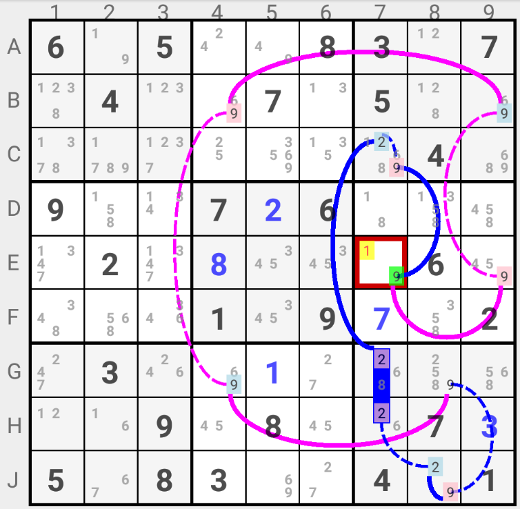
Neste exemplo, se o candidato 9 estiver "LIGADO" em G8, a cadeia azul leva ao candidato 9 estando "LIGADO" em E7.
Se o candidato 9 estiver "DESLIGADO" em G8 e seguirmos a cadeia rosa, eventualmente chegaremos a E7 com o candidato 9 novamente "LIGADO" nessa célula.
Em todas as hipóteses (o candidato 9 sendo ou não a solução em G8), o candidato 9 é a solução em E7.
DÍGITO FORÇADOR Tipo 2 (sempre "DESLIGADO"): as duas cadeias se encontram em uma célula com o mesmo candidato "DESLIGADO". Este candidato não pode ser a solução para essa célula, pois está sempre "DESLIGADO", independentemente do estado inicial do candidato na célula inicial da cadeia.
 Neste exemplo, se o candidato 7 for a solução em D6 (ou seja, estiver "LIGADO" em D6), então, seguindo a cadeia azul, o candidato 2 será definido como "DESLIGADO" em F6.
Se o candidato 7 não for a solução em D6 (ou seja, estiver "DESLIGADO" em D6), então, seguindo a cadeia rosa, o candidato 2 será novamente definido como "DESLIGADO" em F6.
Em todas as hipóteses (o candidato 7 sendo ou não a solução em D6), o candidato 2 não pode ser a solução em F6.
DÍGITO FORÇADO Tipo 3 (dois candidatos "LIGADOS" em uma célula): as duas cadeias se encontram em uma célula com dois candidatos diferentes "LIGADOS". Como uma das cadeias identifica a solução para todos os seus nós e como existem apenas duas cadeias possíveis, os dois candidatos "LIGADOS" na célula final são as únicas soluções possíveis para essa célula. Portanto, os outros candidatos nessa célula não podem ser a solução.
Neste exemplo, se o candidato 7 for a solução em D6 (ou seja, estiver "LIGADO" em D6), então, seguindo a cadeia azul, o candidato 2 será definido como "DESLIGADO" em F6.
Se o candidato 7 não for a solução em D6 (ou seja, estiver "DESLIGADO" em D6), então, seguindo a cadeia rosa, o candidato 2 será novamente definido como "DESLIGADO" em F6.
Em todas as hipóteses (o candidato 7 sendo ou não a solução em D6), o candidato 2 não pode ser a solução em F6.
DÍGITO FORÇADO Tipo 3 (dois candidatos "LIGADOS" em uma célula): as duas cadeias se encontram em uma célula com dois candidatos diferentes "LIGADOS". Como uma das cadeias identifica a solução para todos os seus nós e como existem apenas duas cadeias possíveis, os dois candidatos "LIGADOS" na célula final são as únicas soluções possíveis para essa célula. Portanto, os outros candidatos nessa célula não podem ser a solução.
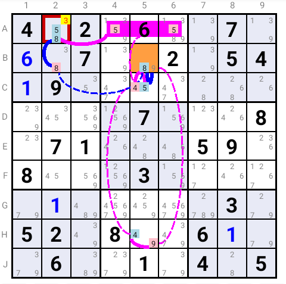
Aqui, se o candidato 9 for a solução em B5, então o candidato 5 estará "LIGADO" em A2; se o candidato 9 não for a solução em B5, então o candidato 8 estará "LIGADO" em A2. Portanto, o candidato 3 não pode ser a solução em A2.
DÍGITO FORÇADO Tipo 4 (dois candidatos "LIGADOS" em uma região): as duas cadeias definem o mesmo candidato duas vezes como "LIGADO" na mesma região (Linha, Coluna ou Quadrado). Como uma das cadeias identifica a solução para todos os seus nós e como existem apenas duas cadeias possíveis, o candidato não pode ser a solução em nenhuma outra célula dessa região.
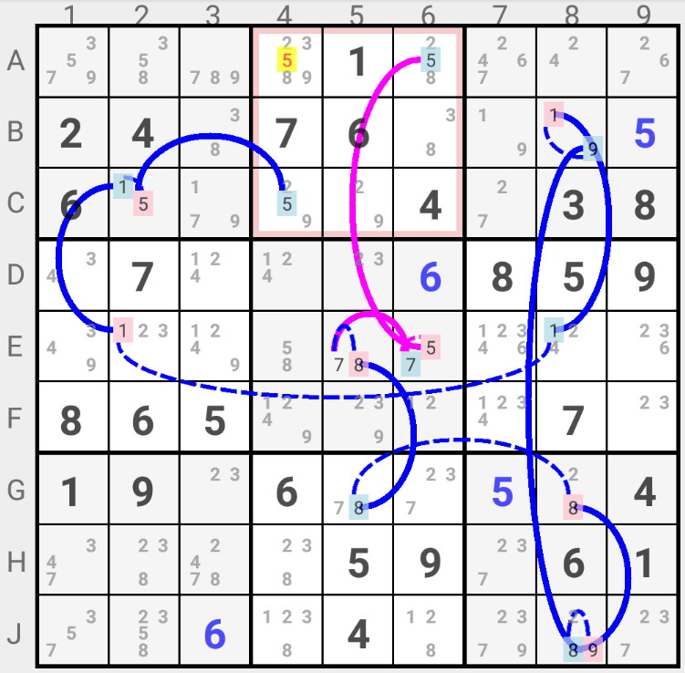
Neste exemplo, se o candidato 7 for a solução em E5 (ou seja, estiver "LIGADO" em E5), então, seguindo a cadeia azul, o candidato 5 será definido como "LIGADO" em C4.
Se o candidato 7 não for a solução em E5 (ou seja, estiver "DESLIGADO" em E5), então, seguindo a cadeia rosa, o candidato 5 será definido como "LIGADO" em A6.
Em todas as hipóteses (o candidato 7 sendo ou não a solução em E5), o candidato 5 deve ser a solução em C4 ou em A6. Isso implica que o candidato 5 não pode ser a solução em nenhuma célula que veja C4 e A6, neste caso, o quadrado "2", eliminando o candidato 5 em A4.
NB: mais formalmente, uma Ligação Forte é a relação que existe entre duas células em uma região (linha, coluna ou quadrado) quando essas duas células são as únicas células nessa região que contêm um determinado candidato: se o candidato não for a solução para a primeira célula, então ele deve ser a solução para a segunda célula e vice-versa. No entanto, nas Estratégias de Encadeamento, consideramos Ligações Fortes como ligações que vão de uma Célula ou um grupo de Células onde afirmamos que o candidato não é a solução (dizemos que o candidato está no estado "DESLIGADO") para uma Célula ou um grupo de Células onde ele deve ser a solução (dizemos que o candidato está no estado "LIGADO").
Se considerarmos uma Célula Bi-Valor, afirmar que um de seus candidatos não é a solução implica que o outro candidato deve ser a solução. Portanto, também existe uma Ligação Forte entre os dois candidatos de uma Célula "Bi-Valor".
Uma Ligação Fraca é uma ligação que vai de uma Célula/grupo de Células onde o candidato está "LIGADO" para uma Célula/grupo de Células onde ele está "DESLIGADO".
Correntes de força Nishio
DÍGITO DE FORÇA DE NISHIO Tipo 1 (mesmo candidato tanto "LIGADO" quanto "DESLIGADO"): as duas cadeias se encontram em uma célula com o mesmo candidato em estados diferentes. Como a mesma suposição inicial não pode levar a conclusões contraditórias, o candidato no início das cadeias não pode ser a solução para essa célula inicial.
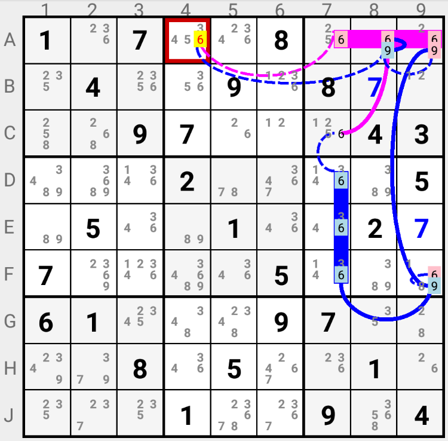
Neste exemplo, assumir que o candidato 6 é a solução em A4 leva a uma contradição: a cadeia azul implica que o candidato 6 não pode ser a solução em C7, enquanto a cadeia rosa implica que o candidato 6 deve ser a solução em C7. Portanto, a suposição inicial está errada: o candidato 6 não pode ser a solução em A4 e pode ser eliminado nessa célula.
NISHIO FORCING DIGIT Tipo 2 (esvaziando uma célula): as duas cadeias se encontram em uma célula "Bi-Value" com ambos os candidatos "OFF", deixando essa célula "vazia". Portanto, o candidato no início das cadeias não pode ser a solução para essa célula inicial.
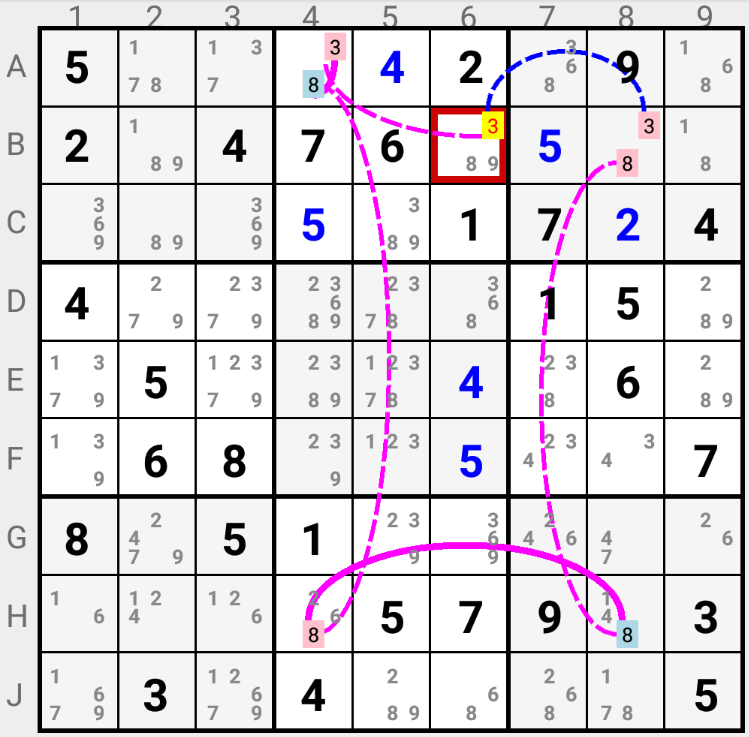
Neste exemplo, assumir que o candidato 3 é a solução em B6 leva a uma contradição: se o candidato 3 é a solução em B6, então o candidato 3 pode ser eliminado em B8 (cadeia azul), enquanto a cadeia rosa implica que o candidato 8 não pode ser a solução em B8. B8 não teria solução. Portanto, a suposição inicial está errada: o candidato 3 não pode ser a solução em B6 e pode ser eliminado nessa célula.
NISHIO FORCING DIGIT Tipo 3 (dois candidatos "LIGADOS" em uma região): as duas cadeias definem o mesmo candidato "LIGADO" em duas células diferentes da mesma região (linha, coluna ou quadrado). Como um determinado candidato pode ser a solução em apenas uma célula de uma região, a suposição inicial está errada. Portanto, o candidato no início das cadeias não pode ser a solução para essa célula inicial.
.png) Neste exemplo, assumir que o candidato 7 é a solução em H6 leva a uma contradição: a cadeia azul implica que o candidato 3 deve ser a solução em G1 ou H1, enquanto a cadeia rosa implica que o candidato 3 deve ser a solução em H2. O candidato 3 seria a solução em duas células diferentes do quadrado 7, o que não é possível. Portanto, a suposição inicial está errada: o candidato 7 não pode ser a solução em H6 e pode ser eliminado nessa célula.
NISHIO FORCING DIGIT Tipo 4 (esvaziando uma região): as duas cadeias definem todas as ocorrências de um candidato como "DESLIGADO" em uma região (linha, coluna ou quadrado). Como um determinado candidato deve ser a solução em uma célula de uma região, a suposição inicial está errada. Portanto, o candidato no início das cadeias não pode ser a solução para essa célula inicial.
Neste exemplo, assumir que o candidato 7 é a solução em H6 leva a uma contradição: a cadeia azul implica que o candidato 3 deve ser a solução em G1 ou H1, enquanto a cadeia rosa implica que o candidato 3 deve ser a solução em H2. O candidato 3 seria a solução em duas células diferentes do quadrado 7, o que não é possível. Portanto, a suposição inicial está errada: o candidato 7 não pode ser a solução em H6 e pode ser eliminado nessa célula.
NISHIO FORCING DIGIT Tipo 4 (esvaziando uma região): as duas cadeias definem todas as ocorrências de um candidato como "DESLIGADO" em uma região (linha, coluna ou quadrado). Como um determinado candidato deve ser a solução em uma célula de uma região, a suposição inicial está errada. Portanto, o candidato no início das cadeias não pode ser a solução para essa célula inicial.
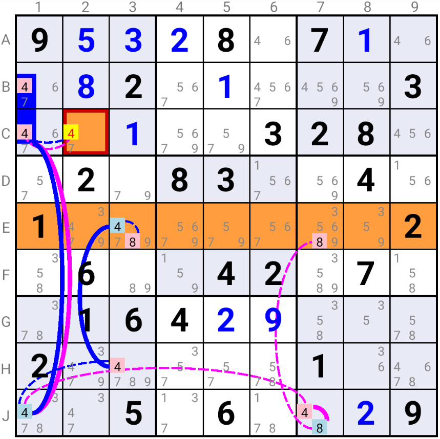
Neste exemplo, assumir que o candidato 4 é a solução em C2 leva a uma impossibilidade: a cadeia azul implica que o candidato 8 deve ser removido de E3, enquanto a cadeia rosa implica que o candidato 8 deve ser removido de E7, deixando a linha "E" sem nenhuma solução possível para o candidato 8, o que não é possível. Portanto, a suposição inicial está errada: o candidato 4 não pode ser a solução em C2 e pode ser eliminado nessa célula.
Cadeias de força unitárias
UNIDADE DE FORÇAMENTO Tipo 1 (sempre "LIGADA"): todas as cadeias se encontram em uma célula com o mesmo candidato "LIGADO". Este candidato deve ser a solução para essa célula, pois está sempre "LIGADO", independentemente da solução do candidato na região inicial.
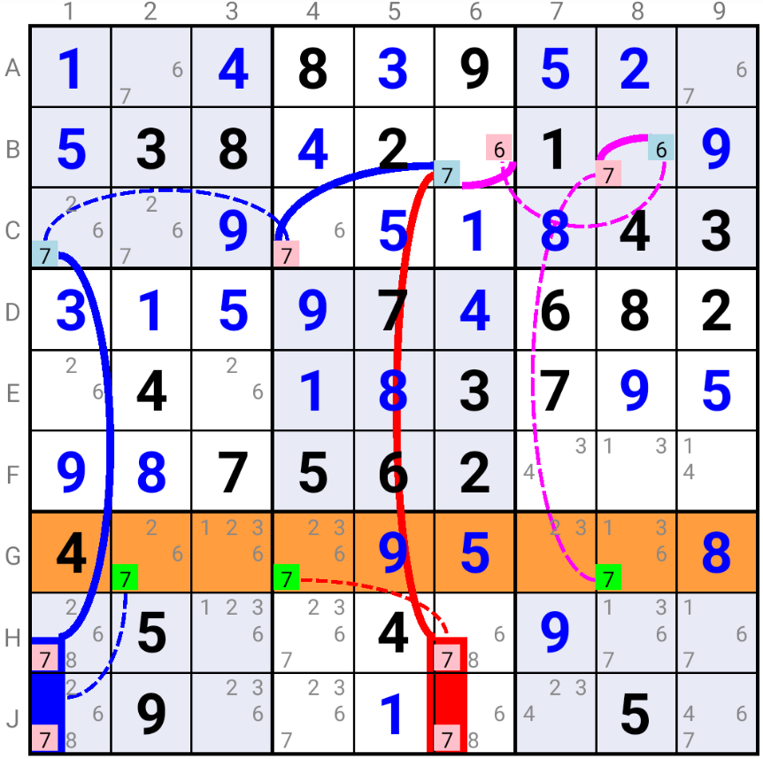
Neste exemplo, se o candidato 7 for a solução em G2, então a cadeia azul implica que o candidato 7 deve ser a solução em B6.
Se o candidato 7 for a solução em G4, então a cadeia vermelha também implica que o candidato 7 deve ser a solução em B6.
Da mesma forma, se o candidato 7 for a solução em G8, então a cadeia rosa implica que o candidato 7 deve ser a solução em B6.
Qualquer que seja a célula em que o candidato 7 seja a solução na linha "G", o candidato 7 deve ser a solução em B6. Ele pode ser definido nessa célula.
UNIDADE DE FORÇAMENTO Tipo 2 (sempre "DESLIGADO"): todas as cadeias se encontram em uma célula com o mesmo candidato "DESLIGADO". Este candidato não pode ser a solução para essa célula, pois está sempre "DESLIGADO", independentemente da solução do candidato na região inicial.
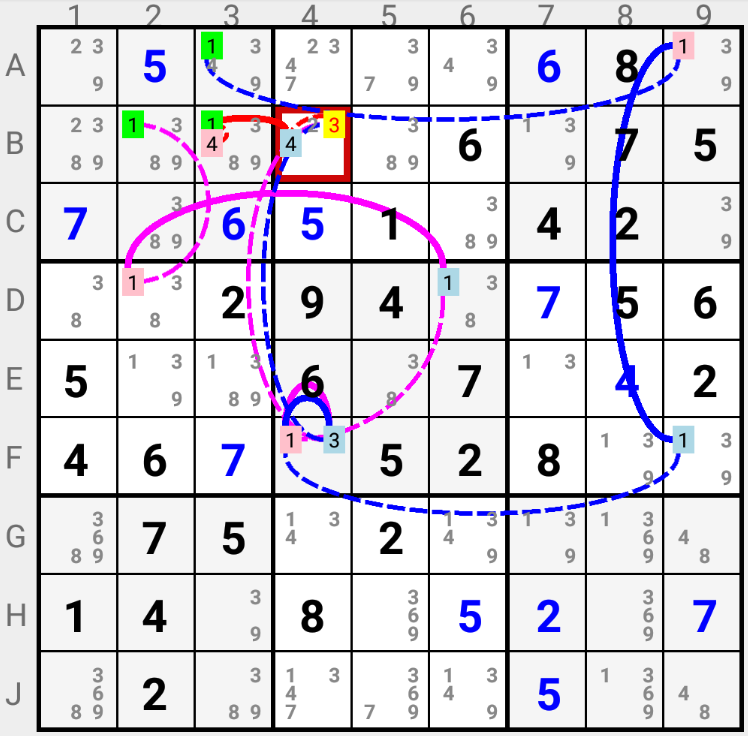
Neste exemplo, se o candidato 1 for a solução em A3, então a cadeia azul implica que o candidato 3 não pode ser a solução em B4.
Se o candidato 1 for a solução em B2, então a cadeia rosa também implica que o candidato 3 não pode ser a solução em B4.
Da mesma forma, se o candidato 1 for a solução em B3, então a cadeia vermelha implica que o candidato 3 não pode ser a solução em B4.
Como o candidato 1 deve ser a solução em A3, ou B2, ou B3 no quadrado "1", o candidato 3 não pode ser a solução em B4. Ele pode ser eliminado nessa célula.
UNIDADE DE FORÇAMENTO Tipo 3 (alguns candidatos "LIGADOS" em uma célula): todas as cadeias se encontram em uma célula com alguns candidatos "LIGADOS". Como uma das cadeias identifica a solução para todos os seus nós e como construímos todas as cadeias possíveis, os candidatos "LIGADOS" na célula final são as únicas soluções possíveis para essa célula. Portanto, os outros candidatos nessa célula não podem ser a solução.
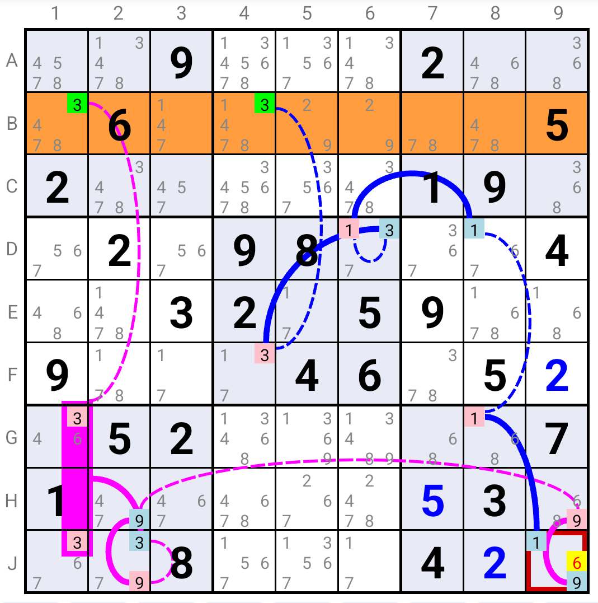
Neste exemplo, se o candidato 3 for a solução em B1, então a cadeia rosa implica que o candidato 9 é a solução em J9.
Se o candidato 3 for a solução em B4, então a cadeia azul implica que o candidato 1 é a solução em J9.
Qualquer que seja o candidato 3 como solução na linha "B", então o candidato 6 nunca poderá ser a solução em J9.
UNIDADE DE FORÇAMENTO Tipo 4 (alguns candidatos "LIGADOS" em uma região): todas as cadeias definem o mesmo candidato como "LIGADO" na mesma região (linha, coluna ou quadrado). Como uma das cadeias identifica a solução para todos os seus nós e como construímos todas as cadeias possíveis, o candidato não pode ser a solução em nenhuma outra célula dessa região.
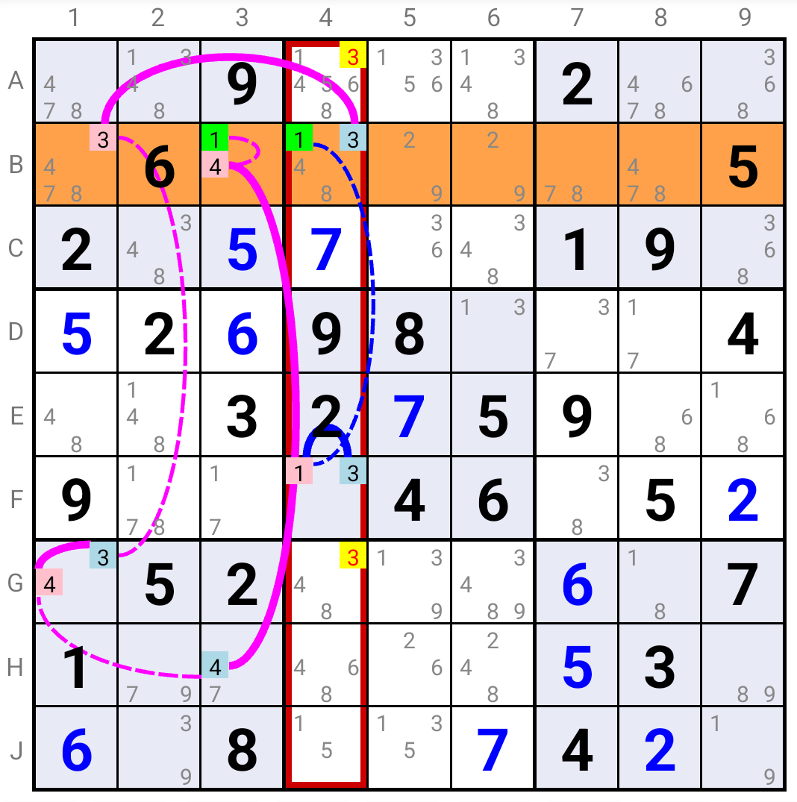
Aqui, se o candidato 1 for a solução em B3, então a cadeia rosa implica que o candidato 3 é a solução em B4.
Se o candidato 1 for a solução em B4, então a cadeia azul implica que o candidato 3 é a solução em F4.
Qualquer que seja o candidato 1 como solução na linha "B", então os candidatos 3 em A4 e G4 nunca podem ser a solução na coluna "4".
Corrente de força de conjunto quase travado
Se duas ALS (Áreas de Solução Alternativa) têm um Candidato em comum e se cada ocorrência desse Candidato na primeira ALS pode ver todas as ocorrências desse Candidato na segunda ALS, então ele só pode ser uma solução em uma dessas duas ALS. Tal Candidato é chamado de Candidato Comum Restrito (CCR, na sigla em inglês).
Consideremos uma Cadeia de ALS onde cada ALS está conectada à ALS anterior por meio de um CCR e à ALS seguinte por meio de um CCR diferente, e onde a primeira ALS e a última ALS da cadeia compartilham um Candidato em comum. Se esse Candidato em comum não for o CCR que conecta a primeira ALS à segunda ALS e também não for o CCR que conecta a penúltima ALS à última ALS, então esse Candidato não pode ser a solução em nenhuma Célula fora dessas ALS que vê todas as ocorrências desse Candidato na primeira ALS e na última ALS da cadeia.
De fato, se fosse a solução em uma dessas células fora da ALS, então seria eliminada na primeira e na última ALS da cadeia. Isso implica também que todos os outros candidatos na primeira ALS devem ser a solução nessa ALS. Em particular, o rcc que conecta a primeira ALS à segunda ALS seria uma solução na primeira ALS, eliminando-a, portanto, na segunda ALS, o que, por sua vez, implica que o rcc que conecta a segunda ALS à terceira ALS seria uma solução na segunda ALS, e assim por diante até a última ALS da cadeia. Como o rcc que conecta a penúltima ALS à última ALS seria eliminado na última ALS, todos os outros candidatos na última ALS teriam que ser a solução na última ALS, em particular aquele que é comum à primeira ALS, o que não é possível.
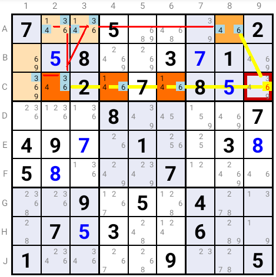
Neste exemplo, se o Candidato 6 fosse a solução em C9, então o Candidato 6 seria eliminado na ALS {A8}, onde o Candidato 4 teria que ser a solução. Isso eliminaria o Candidato 4 na ALS {A2, A3, B1, C1} e o Candidato 3 teria que ser uma solução nessa ALS. Isso implicaria que o Candidato 3 seria eliminado na ALS {C2, C4, C6}. Mas o Candidato 6 em C9 já eliminou o Candidato 6 nessa ALS, de modo que essa ALS teria 2 Candidatos restantes (1 e 4) em 3 células. O que não é possível. Portanto, o Candidato 6 não pode ser a solução em C9.
Flor da Morte
Vamos definir um "Conjunto Quase Bloqueado" ("ALS, na sigla em inglês)" como um conjunto de n células na mesma região (linha, coluna ou quadrado) contendo exatamente (n+1) candidatos: por exemplo, uma célula "Bi-Valor" ou duas células "Bi-Valor" com um candidato em comum.
Vamos definir um "Conjunto Bloqueado" como um conjunto de n células contendo exatamente n candidatos. As células não precisam necessariamente pertencer à mesma região, mas cada um desses n candidatos deve enxergar todas as outras células do conjunto em que está presente; por exemplo, um par nu é um Conjunto Bloqueado.
Nesta estratégia, buscamos uma célula que possa enxergar tantos "ALS" quantos forem os candidatos presentes na célula. O suposto descobridor desta estratégia chamou essa célula de "caule" e os "ALS" de "pétalas", daí o nome.
Se cada candidato no "tronco" puder ver todas as células do "ALS" selecionado que contêm o mesmo candidato, então um candidato presente no "ALS" não pode ser a solução para nenhuma célula fora do "ALS" que veja todas as células nesses "ALS" que contêm esse candidato.
De fato, a solução para o "tronco" reduzirá o "ALS" relacionado a um "Conjunto Bloqueado". Se a solução para uma célula fora desse "ALS" eliminar um candidato nesse "Conjunto Bloqueado", então esse conjunto de n células terá apenas (n-1) candidatos possíveis.
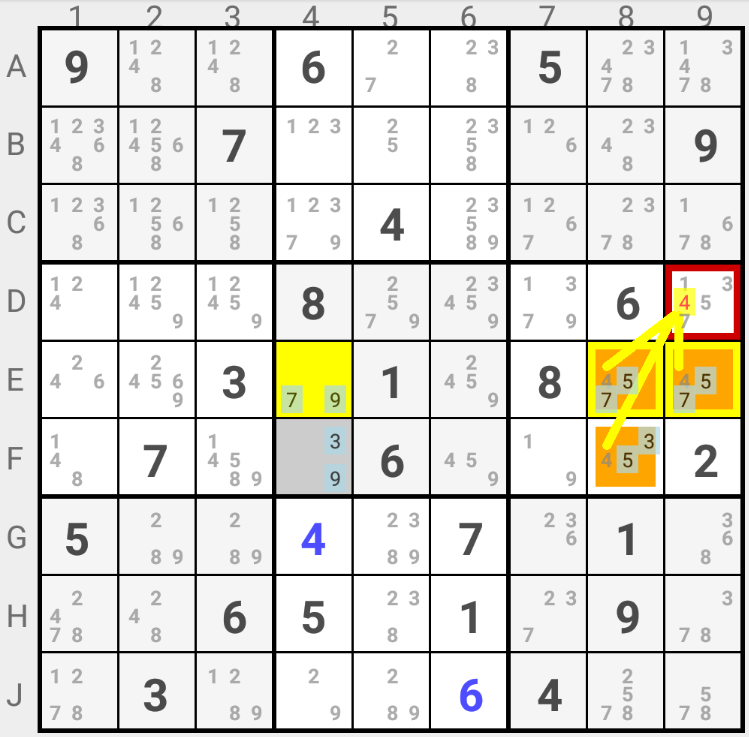
Neste exemplo, F4 é o caule. Vejamos como ele propaga a morte para as pétalas.
Se o Candidato 9 for a solução em F4, então o Candidato 7 é a solução em E4 e o Candidato 3 em F8. As células E8 e E9 formam um Par Nu com base nos Candidatos 4 e 5, o que elimina os Candidatos 4 e 5 em D9.
Se o Candidato 3 for a solução em F4, então o Candidato 9 é a solução em E4. As células E8, E9 e F8 formam um Triplo Nu com base nos Candidatos 4, 5 e 7, o que elimina os Candidatos 4, 5 e 7 em D9 e o Candidato 7 em D7.
Outra maneira de analisar isso consiste em assumir que o Candidato 4 é a solução em D9. Então, a ALS formada por E4, E8 e E9 torna-se uma Tripla Nua baseada nos Candidatos 5, 7 e 9. Isso implica que o Candidato 9 é a solução em E4, o Candidato 3 em F4, o que elimina o Candidato 3 em F8. Mas as células E8 e E9 agora formam um Par Nu baseado nos Candidatos 5 e 7, o que elimina o Candidato 5 em F8... deixando F8 sem nenhum candidato possível. A suposição de que o Candidato 4 é a solução em D9 está errada e o Candidato 4 pode ser eliminado em D9.
Sobreposição de padrão
Consideremos as células não resolvidas que contêm um determinado candidato e identifiquemos todas as soluções finais possíveis para esse candidato (ou seja, todos os padrões nos quais o candidato aparece uma única vez por linha, coluna e quadrado). Duas configurações são de particular interesse:
sempre "LIGADO": um candidato em uma determinada célula está presente em todos os padrões possíveis. Ele deve ser a solução nessa célula.
sempre "DESLIGADO": um candidato em uma determinada célula está ausente de todos os padrões possíveis. Ele não pode ser a solução nessa célula e, portanto, pode ser eliminado.
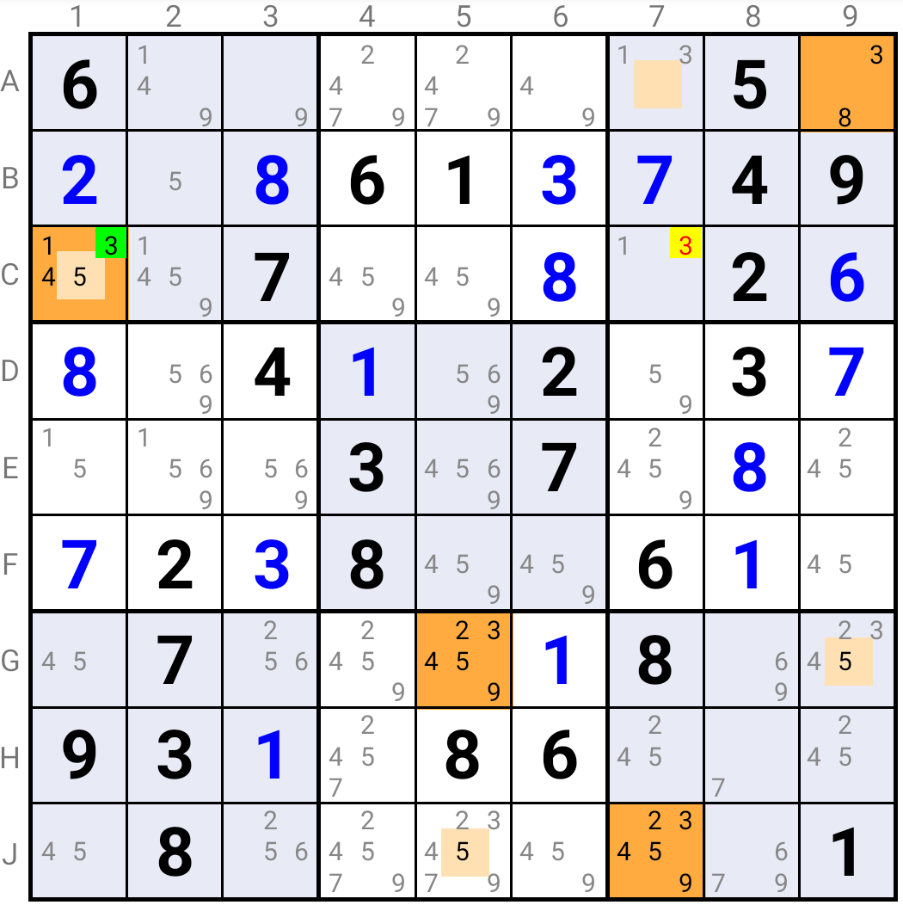
No exemplo, existem apenas dois padrões possíveis para o candidato 3:
A7-C1-G9-J5
A9-C1-G5-J7
C1 está presente em todos os padrões, portanto, o candidato 3 deve ser a solução nesta célula.
Por outro lado, C3 está ausente em todos os padrões possíveis. Portanto, o candidato 3 não pode ser a solução nesta célula.
Observação: pode haver vários candidatos sempre "LIGADOS" ou sempre "DESLIGADOS".
Para reduzir o número de padrões a serem considerados, esta estratégia deve ser usada quando restarem apenas algumas células não resolvidas para um candidato.
Bingo de Bowman
Esta é uma estratégia de tentativa e erro. Parte-se do pressuposto de que um determinado candidato é a solução para uma célula específica e observam-se as consequências. Se isso levar a um erro, então a suposição inicial está errada e o candidato correspondente pode ser eliminado daquela célula.
Por exemplo, a suposição inicial leva à eliminação de todos os candidatos em uma célula específica ou de um candidato em uma região (linha, coluna ou quadrado).
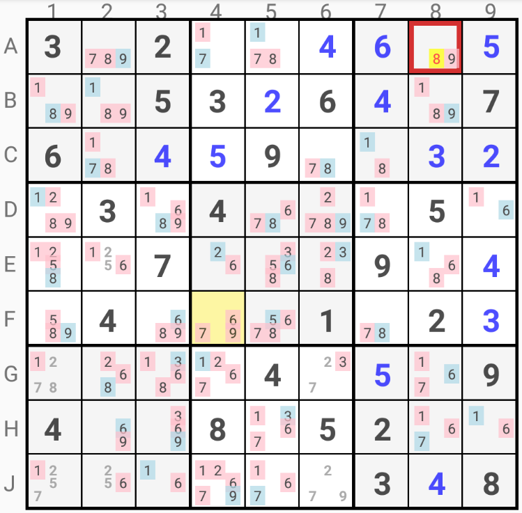
Neste exemplo, se o candidato 8 fosse a solução em A8, isso levaria à eliminação de todos os candidatos em F4. Portanto, o candidato 8 não pode ser a solução em A8 e pode ser eliminado nessa célula.
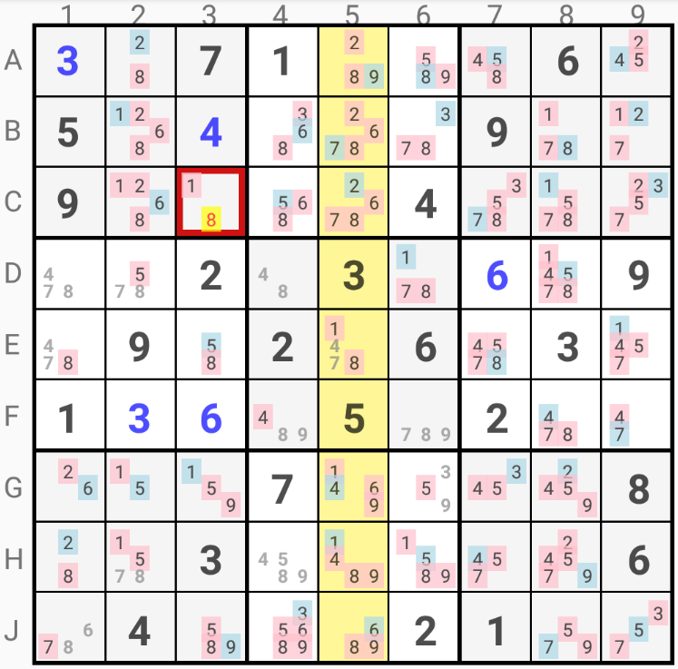
Neste segundo exemplo, se o candidato 8 fosse a solução em C3, isso levaria à eliminação de todos os candidatos 8 na coluna "5". Portanto, o candidato 8 não pode ser a solução em C3 e pode ser eliminado nessa célula.
Esta é uma maneira de usar a estratégia do Bingo de Bowman, ou seja, tentar eliminar um único candidato. Agora, só podemos considerar hipóteses que não levem a uma contradição. Encadeando essas hipóteses, podemos resolver qualquer quebra-cabeça. Dave Peru propõe uma metodologia interessante chamada Eliminação Multivalorada para selecionar as hipóteses mais promissoras. Por exemplo, veja como selecionar a hipótese mais apropriada para uma tentativa de Bingo de Bowman.
Cores Fracas
O algoritmo Cores Fracas (ou Cores Simples + Dobradiça) estende ambas as extremidades de uma cadeia de Cores Simples usando Dobradiças ou Retângulos Vazios. As células vistas no final da cadeia inicial são todas levemente sombreadas na cor oposta. Se uma única célula agora vê um conjunto completo de células levemente sombreadas em uma unidade, isso só pode ser verdadeiro se a célula terminal for verdadeira e receber a mesma cor (uma célula bônus). Quaisquer células que vejam uma célula bônus recém-criada também podem ser levemente coloridas na cor oposta e o esquema continua. Células bônus só podem ser criadas na cor da célula terminal da qual se originam (já que a garantia de correspondência verdadeira é perdida para a cor oposta). As mesmas deduções disponíveis em Cores Simples agora estão disponíveis.
A cadeia inicial pode ser tão curta quanto um elo conjugado. Com a prática, muitas vezes é desnecessário usar os sombreados claros para verificar a presença de uma célula bônus. Se houver mais de uma cadeia de coloração única possível, o método deve ser repetido para cada uma, quando produzir quase todas as exclusões encontradas por Multicores. A diferença é que este método não é bifurcado, pois apenas uma cadeia não ramificada está envolvida em qualquer momento.
O método é anterior ao X-Colors, que é uma extensão dos mesmos princípios para fornecer deduções de Nishio, permitindo múltiplas ramificações. Portanto, a aplicação repetida do método Weak Colors não encontrará todas as exclusões fornecidas pelo X-Colors.
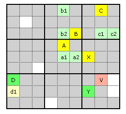
Este diagrama mostra a ordem de marcação para um exemplo ampliado. Na coluna 7, o par conjugado X-Y foi colorido intensamente. A partir de X, a coloração é estendida por 3 dobradiças para gerar as células bônus A, B e C, que devem ser verdadeiras quando X for verdadeiro. Primeiro, a1 e a2 são levemente sombreadas em verde, pois uma delas deve ser verdadeira se X for falso. Como A é a única célula restante na caixa 5, ela pode receber a mesma cor que X. A lógica continua: A -> (b1 e b2) -> B -> (c1 e c2) -> C. Da célula verde, Y, também obtemos Y -> d1 -> D, mas observe que d1 não pode ser colorida intensamente, mesmo sendo conjugada com D, pois, embora D deva ser verdadeira quando Y for verdadeiro, ela ainda pode ser verdadeira mesmo quando Y for falso.
A célula vermelha, V, agora pode ser excluída de acordo com as regras usuais de coloração simples. Ela é representada tanto por células amarelas (C) quanto por células verdes (Y e D) fortemente coloridas, e um desses dois conjuntos deve ser verdadeiro.
Para evitar bifurcações, cada exclusão deve ser reportável como uma única cadeia de inferências não ramificada (e, portanto, poderia ser escrita como um AIC).
Cores X
X-Colors, ou Cores Estendidas, é uma técnica de coloração que utiliza apenas duas cores, mesmo quando conexões fracas são interligadas. É um método relativamente simples, de aprendizado rápido e capaz de alcançar os mesmos resultados que técnicas mais avançadas, como Multi-Colors e cadeias de um único dígito.
Essa técnica pode ser usada em um agrupamento inicial de cores de qualquer tamanho, embora um agrupamento maior aumente as chances de encontrar candidatos para remover.
X-Colors pode ser vista como uma extensão da técnica de Cores Fracas. Tanto as Cores Fracas quanto as X-Colors são baseadas em um conjunto simples de instruções, que devem ser executadas repetidamente.
Ocasionalmente, X-Colors pode chegar ao nível de Nishio, a técnica definitiva para resolver problemas de um único dígito. Isso coloca a técnica em um território perigoso, já que muitos solucionadores preferem evitar Nishio.
X-Colors realiza o mesmo trabalho que Cores Simples e Multi-Colors com apenas duas cores e alguns passos simples, definidos de forma algorítmica, e pode resolver situações que nenhuma das duas técnicas consegue. No entanto, as cores X não substituem a técnica Ultracoloring de múltiplos dígitos. Veja os exemplos abaixo para entender melhor a técnica.
Algoritmo
Concentre-se em um único candidato na grade, pois X-Colors é uma técnica de um único dígito.
Passo 1) Selecione um par de células conjugadas, pinte uma delas com a cor A e a outra com a cor B.
Passo 2) Até que não seja possível encontrar mais células para colorir, faça o seguinte:
2.1) Encontre uma célula não colorida que seja par conjugado de uma célula já colorida (com qualquer cor A ou B).
2.2) Pinte esta nova célula com a cor OPOSTA da sua célula par conjugada já colorida. Ou seja, se a célula conjugada colorida for da cor A, então a nova célula será da cor B, e vice-versa.
Passo 3) Até que não seja possível encontrar mais células para colorir, faça o seguinte:
3.1) Se todas as células, exceto uma (chamada de Célula Excepcional), forem pares de células coloridas com a mesma cor (digamos, a cor A), então esta Célula Excepcional pode ser colorida com a MESMA COR (A).
Passo 4) Uma vez marcadas de A a B todas as células possíveis na posição do quebra-cabeça:
4.1) Se uma célula tiver duas ou mais células adjacentes coloridas com ambas as cores (A E B), você pode excluir com segurança essa célula como candidata ao dígito em foco.
4.2) Se duas ou mais células da mesma casa (linha, coluna ou quadrado) forem coloridas com a mesma cor A, então você pode concluir que A OUTRA COR B É VERDADEIRA.
4.3) Se TODAS as células de uma casa forem adjacentes a células coloridas com a mesma cor A, você pode concluir que A OUTRA COR B É VERDADEIRA.
Isso basta para definir toda a técnica de coloração. De fato, ao terminar a coloração no final da etapa 3, você terá três grupos diferentes de células: as coloridas com a cor A, as coloridas com a cor B e as não coloridas.
Assim, temos as seguintes implicações de Verdadeiro/Falso:
Se uma célula colorida com a cor A for identificada como Verdadeira, então todo o grupo de células coloridas com a mesma cor A será VERDADEIRO.
Se uma célula colorida com a cor A for identificada como Falsa, então todo o grupo de células coloridas com a cor oposta B será VERDADEIRO.
Se, seguindo as afirmações da técnica, você não conseguir provar nenhuma das anteriores, então outra técnica deverá ser tentada.
Observe que essas duas afirmações NÃO IMPLICAM que, se A for verdadeiro, então B é falso, e vice-versa. Essa relação de "yin-yang" só é verdadeira quando se trata exclusivamente de pares conjugados de células e, nesse caso, classificar como Verdadeiras as células coloridas com a cor A eliminará imediatamente as candidatas em células pares, incluindo as coloridas com a cor B, tornando a distinção irrelevante.
Pontos importantes a serem observados:
Se eliminarmos a Etapa 3, o que temos é a definição de Coloração Simples. É a Etapa 3 que faz a diferença. Sua definição é bastante simples, mas muito poderosa.
Durante o processo na Etapa 3, se você colorir uma célula que possui uma célula conjugada que ainda não foi colorida com A ou B, VOCÊ NÃO PODE COLORIR ESTA CÉLULA NÃO COLORIDA COM A COR OPOSTA. Isso é feito nas etapas 1 e 2, mas NÃO na etapa 3. E as Etapas 1, 2, 3 e 4 são executadas em sequência; não é permitido voltar, por exemplo, da etapa 3 para a 2.
O Caso 4.3 é muito raro e ocorre quando não há nenhuma Célula de Exceção em uma casa.
O X-Colors resolve todas as posições resolvidas pelas técnicas de Coloração Simples e Múltipla, mas resolve algumas posições adicionais onde nenhuma delas consegue. E usa apenas duas cores, o que o torna fácil de entender e usar por humanos.
X-Colors resolve as mesmas situações que X-Wing, com os mesmos movimentos. Aliás, Multiple Colors também. Portanto, se em uma posição do quebra-cabeça você verificar X-Colors antes de verificar X-Wing, poderá eliminar X-Wing do seu arsenal de técnicas: ele não encontrará nenhum movimento novo no quebra-cabeça. Infelizmente, isso não se aplica às demais técnicas de Pesca.
Trata-se de uma coleção que mostra todas as situações descritas anteriormente, exceto Cores Simples. Como o X-Colors obviamente resolve as mesmas situações de quebra-cabeça que Cores Simples, o autor considera que os exemplos deste não são de interesse.
Nesses exemplos, as linhas desenhadas (azuis ou verdes) são usadas para auxiliar na compreensão das implicações de coloração da Etapa 3, marcando todas as células de uma casa (quadrado, linha ou coluna) que são afetadas por uma ou várias células já coloridas.
Exemplo 1
Multicores. Nessa situação, X-Cores encontra o mesmo movimento que a Técnica de Múltiplas Cores.
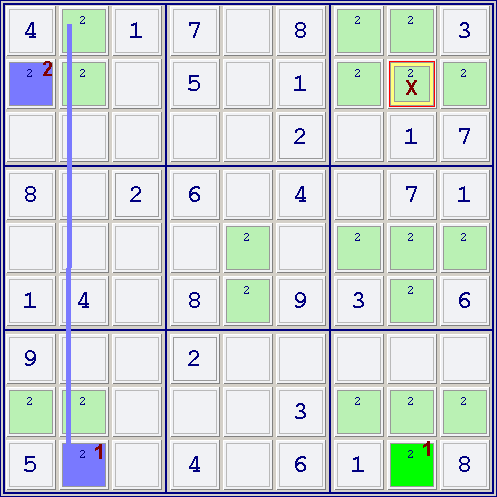
Focando em 2, marcamos o par conjugado r9c2 (azul) e r9c8 (verde). (Células marcadas com 1). A Etapa 2 não marca mais nenhuma célula.
A Etapa 3 permite marcar r2c1 em azul, pois é a única célula em sua caixa que não é par de r9c2. (Célula marcada com 2). Nenhuma outra célula pode ser marcada na Etapa 3.
A Etapa 4.1 permite remover o candidato 2 de r2c8, pois é par tanto de r2c1 (azul) quanto de r9c8 (verde). (Célula marcada com X).
Exemplo 2
Eliminação não encontrada por Cores Únicas ou Múltiplas.
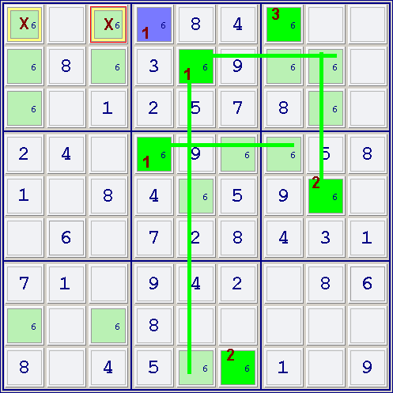
Focando no número 6, marcamos o par conjugado r1c4 (azul) e r2c5 (verde).
O Passo 2 permite marcar r4c4 de verde. (Todas essas células estão marcadas com 1).
O Passo 3 permite, na primeira iteração, marcar r9c6 e r5c8 de verde, pois são as únicas células em seus respectivos retângulos que não são pares de r2c5 e r4c4, respectivamente. (Célula marcada com 2).
Observe que também podemos marcar r5c8 de verde, pois é a única célula em sua linha que não é par de r4c4, e podemos marcar r9c6 de verde, pois é a única célula em sua coluna que não é par de r4c4. O resultado é o mesmo neste caso.
O Passo 3, na segunda iteração, permite agora marcar r1c7 de verde. É a única célula da sua caixa que não é par de células verdes (neste exemplo, r2c5 e r5c8 são pares das demais células da caixa). (Célula marcada com 3).
Podemos marcar mais células em iterações subsequentes da Etapa 3 (r3c1 em verde e, em seguida, r8c3 em verde), mas os resultados serão os mesmos e não são mostrados.
A Etapa 4.1 permite remover o candidato 6 de r1c1 e r1c3, porque essas células são pares tanto de r1c4 (azul) quanto de r1c7 (verde). (Células marcadas com X).
Exemplo 3
A eliminação de candidatos e a contradição podem ser encontradas no mesmo enigma.
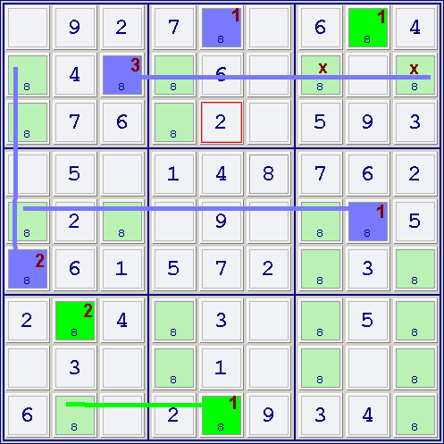
De forma semelhante ao Exemplo 2, você pode facilmente encontrar uma maneira de excluir as células marcadas com X (r2c7 e r2c9), pois elas compartilham como pares uma célula verde (r1c8 em sua casa) e uma célula azul (r2c3 em sua linha).
MAS você também pode ver que r1c8 (já marcada em verde) é a única célula em sua casa que não é par de r2c3, então, como afirma o Passo 3, você pode marcá-la em AZUL. O resultado é uma contradição (uma célula marcada simultaneamente em verde e azul) e duas células em uma linha (r1) e em uma coluna (c8) com a mesma cor (azul).
Então, como afirma o Passo 4.2, as células marcadas em verde são VERDADEIRAS. Você pode resolver imediatamente todas as células verdes (r1c8, r7c2 e r9c5) porque todas elas são um 8. Observe que, mesmo que você tenha encontrado uma contradição com as células azuis, você NÃO PODE assumir que TODAS AS CÉLULAS AZUIS SÃO FALSAS. Nessa situação, a única conclusão possível é que as células verdes são verdadeiras.
Exemplo 4
Eliminação após múltiplas iterações da Etapa 3.
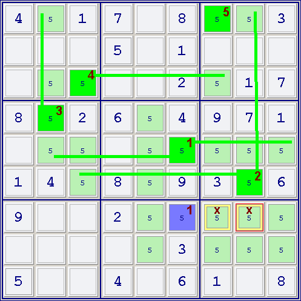
Este é um bom exemplo de como várias iterações na Etapa 3 podem encontrar eliminações. Nesta posição, focando no 5, existe apenas um par conjugado: r5c6 e r7c6 (células marcadas com 1).
Após a Etapa 2, nenhuma outra célula pode ser marcada. As opções "Cor Única" e "Cor Múltipla" são inúteis aqui.
Realizando várias iterações da Etapa 3, podemos marcar de verde diferentes células (apenas uma célula por iteração), numeradas de 2 a 5. Quando a Etapa 3 não puder mais marcar nenhuma célula, podemos excluir o candidato 5 das células marcadas com X (Etapa 4.1).
Exemplo 5
Contradição
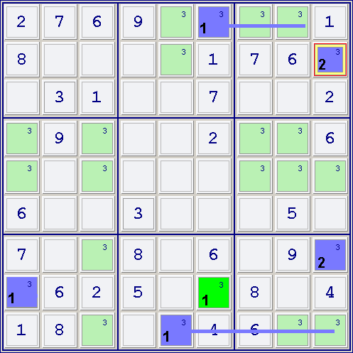
Após as etapas 1 e 2, temos células coloridas marcadas com 1.
A etapa 3 colore (azul) duas células da coluna 9 (r2c9 e r7c9). Isso é uma contradição, e você pode concluir, como afirmado na etapa 4.2, que as células verdes (neste caso, r8c6) são VERDADEIRAS. Mais uma vez, nesta situação você não pode concluir que as células azuis são falsas, mas sim que as células verdes são VERDADEIRAS.
Exemplo 6
Contradição, e não há células restantes em uma casa para serem coloridas com uma única cor.
Essa situação também pode ser resolvida com Multicores, mas pode ser usada para lidar com a rara situação em que uma casa não comporta nenhuma célula de uma determinada cor (Passo 4.3).
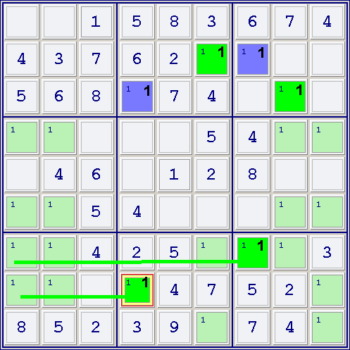
Concentrando-se no número 1, e após a coloração inicial (células marcadas com 1), e mesmo antes de aplicar o Passo 3, você pode ver que todas as células na caixa inferior esquerda são pares de células verdes.
Nenhuma célula pode ser marcada de verde nesta caixa, portanto, como afirma o Passo 4.3, você pode concluir que as CÉLULAS AZUIS SÃO VERDADEIRAS e contêm o número 1.
Armadilha de cores
A técnica Color Trap é um tipo de coloração que utiliza um único grupo de cores com apenas duas cores para realizar eliminações fora desse grupo. Juntamente com a técnica Color Wrap, essa técnica pertence ao grupo das Cores Simples.
Como funciona
O exemplo a seguir demonstra o princípio:
 Todos os candidatos para o dígito 3 estão destacados. Quando uma linha, coluna ou caixa contém apenas 2 candidatos para um dígito, um deles deve ser verdadeiro e o outro deve ser falso. Esses candidatos têm uma forte ligação. Na terminologia de cores, esses candidatos formam um par conjugado. Podemos usar cores para nos ajudar a lembrar quais candidatos devem ser verdadeiros ou falsos simultaneamente. No exemplo, as cores verde e azul foram aplicadas. Observe que a linha 9, a coluna 9 e a caixa 9 têm 2 candidatos para o dígito 3, que agora têm cores opostas.
Agora, ou todas as células azuis devem conter o dígito 3 ou todas as células verdes. Não há meio-termo em que algumas células azuis e algumas células verdes contenham o dígito 3.
A célula r2c6 pode ver ambas as cores. Ela não pode conter um candidato para o dígito 3.
Envoltório de cor
Color Wrap é um subtipo de coloração que elimina candidatos para uma das paridades em um único grupo, expondo uma contradição nessa paridade. Os candidatos com a paridade oposta podem ser colocados em suas respectivas células, tornando esta uma técnica de posicionamento, em vez de uma técnica de eliminação.
Color Wrap pertence à categoria Cores Simples, juntamente com Armadilha de Cores.
Cada movimento de coloração pode ser facilmente replicado por uma cadeia. No entanto, as cores são mais fáceis de usar para a maioria dos jogadores, pois é uma técnica mais visual.
Aqui está um exemplo:
Todos os candidatos para o dígito 3 estão destacados. Quando uma linha, coluna ou caixa contém apenas 2 candidatos para um dígito, um deles deve ser verdadeiro e o outro deve ser falso. Esses candidatos têm uma forte ligação. Na terminologia de cores, esses candidatos formam um par conjugado. Podemos usar cores para nos ajudar a lembrar quais candidatos devem ser verdadeiros ou falsos simultaneamente. No exemplo, as cores verde e azul foram aplicadas. Observe que a linha 9, a coluna 9 e a caixa 9 têm 2 candidatos para o dígito 3, que agora têm cores opostas.
Agora, ou todas as células azuis devem conter o dígito 3 ou todas as células verdes. Não há meio-termo em que algumas células azuis e algumas células verdes contenham o dígito 3.
A célula r2c6 pode ver ambas as cores. Ela não pode conter um candidato para o dígito 3.
Envoltório de cor
Color Wrap é um subtipo de coloração que elimina candidatos para uma das paridades em um único grupo, expondo uma contradição nessa paridade. Os candidatos com a paridade oposta podem ser colocados em suas respectivas células, tornando esta uma técnica de posicionamento, em vez de uma técnica de eliminação.
Color Wrap pertence à categoria Cores Simples, juntamente com Armadilha de Cores.
Cada movimento de coloração pode ser facilmente replicado por uma cadeia. No entanto, as cores são mais fáceis de usar para a maioria dos jogadores, pois é uma técnica mais visual.
Aqui está um exemplo:
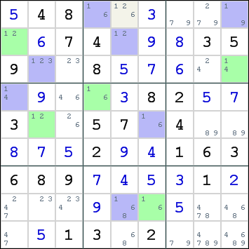
Todos os candidatos para o dígito 1 estão destacados. Todos, exceto um, pertencem a um grande grupo de pares conjugados. Os dois pares nesse grupo têm as cores verde e azul. Todos os candidatos com a mesma cor são equivalentes, o que significa que ou todos contêm o dígito 1 ou nenhum deles o contém. Em outras palavras: eles são verdadeiros ou falsos como um grupo.
No exemplo, é impossível que os candidatos azuis sejam verdadeiros juntos, porque isso causaria conflitos na linha 1, coluna 5 e caixa 2. A única alternativa restante é que todos os candidatos verdes sejam verdadeiros. Podemos colocar o dígito 1 em todas as células verdes.
Asa de cor
A técnica de Color Wing é um subtipo de coloração que elimina candidatos usando múltiplos agrupamentos. As eliminações ocorrem fora desses agrupamentos.
Mais detalhes e exemplos podem ser encontrados no artigo Multi-Colors, outro nome para essa técnica.
3D Medusa
A técnica 3D Medusa, ou Coloração Avançada, considera múltiplos dígitos.
Quando aplicada a um único grupo, seus efeitos podem ser replicados com a colocação de Marcas de Equivalência na grade de traços de lápis, tornando-a uma boa técnica avançada para quem usa lápis e papel para resolver os cálculos.
Ao utilizar múltiplos grupos, essa técnica permite localizar todas as cadeias de candidatos na grade.
Como funciona
O 3D Medusa expande as regras de Cores Simples e Multicores para incluir múltiplos dígitos. Ao aplicar cores aos candidatos para um único dígito, você está trabalhando em um plano bidimensional de 9 linhas por 9 colunas. Para visualizar a imagem tridimensional, imagine cada plano como uma camada em um cubo 3D. Como existem 9 dígitos, existem 9 camadas neste cubo. Quando houver apenas 2 candidatos em uma linha em qualquer uma das 3 dimensões, você pode atribuir cores opostas a eles, formando agrupamentos como faria na coloração 2D.
Como seria um pouco trabalhoso transformar cada Sudoku em um modelo 3D, existem algumas regras simples que permitem aplicar essa técnica em uma grade bidimensional de rabiscos a lápis.
Escolha um dígito inicial
Como você deve tentar colorir normalmente antes de colorir em 3D, é importante já ter alguma noção das possibilidades de coloração para cada dígito. Para selecionar o melhor dígito inicial, escolha um dígito que tenha dois ou mais pares conjugados e que esteja localizado em células bivaloradas. Essas células bivaloradas permitem expandir os agrupamentos de cores além do limite de um único dígito.
Aqui está uma grade com anotações a lápis que não apresenta técnicas básicas de resolução:
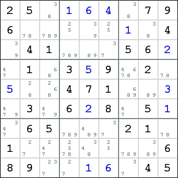
Para esta grade, o dígito inicial é uma escolha fácil, observando o padrão do dígito 3. Todos os candidatos restantes formam um único agrupamento, e existem 8 células binárias no agrupamento, o que nos dá ampla oportunidade de expandir o agrupamento para outros dígitos.
Crie um agrupamento de cores para o dígito inicial.
Faça isso da mesma forma que faria para colorir de forma simples. Pegue um par conjugado e use cores opostas para marcar a paridade. Expanda o agrupamento adicionando outros candidatos que estejam conectados a ele por um par conjugado. Certifique-se de que ambas as extremidades de cada par tenham paridades opostas.
Em nosso exemplo, não é muito difícil colorir este agrupamento:
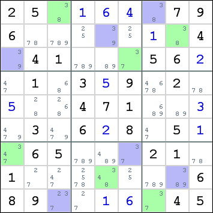
Marque as paridades opostas nas células bivaloradas.
Check your cluster to see if there are bivalue cells where only one of the candidates is colored. When found, color the second candidate with the opposite color.
In our example, we have to switch from cell coloring to candidate coloring. All candidates for digit 3 have the same color, but now we have used the complementary color for all bivalue cells that contain a colored digit:
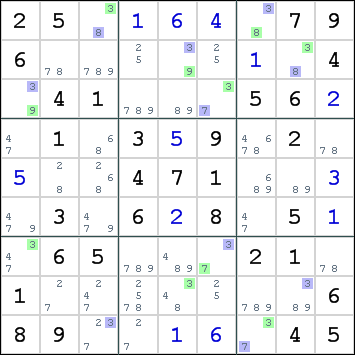
Para este exemplo, continuaremos colorindo os dígitos restantes. No entanto, nesta etapa você já deve ter percebido algo peculiar...
Expanda o agrupamento para os dígitos recém-adicionados.
Para cada candidato adicionado na etapa anterior, verifique os candidatos restantes para esse dígito. Se o candidato fizer parte de um ou mais pares conjugados, expanda o agrupamento adicionando esses candidatos com a cor oposta. Continue colorindo para cada dígito até que não seja possível adicionar mais candidatos.
Em nosso exemplo, adicionamos candidatos para os dígitos 7, 8 e 9 na etapa anterior. Após expandir o agrupamento com pares conjugados para esses dígitos, obtemos este agrupamento:
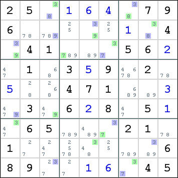
Repita os últimos 2 passos até terminar.
Agora verifique se a última etapa adicionou novas células bivaloradas ao cluster. Se sim, repita as duas últimas etapas até que nenhuma outra adição seja possível.
Como nenhuma nova célula bivalorada foi adicionada na última etapa, concluímos o exemplo.
Analise o cluster
Agora você pode analisar os resultados. A primeira verificação é para ver se o agrupamento contém uma contradição:
Dois candidatos em uma mesma célula têm a mesma cor.
Dois candidatos para um mesmo dígito em uma mesma casa têm a mesma cor.
Quando uma contradição é encontrada, você pode colocar todos os candidatos com a cor oposta em suas respectivas células.
A próxima verificação é para ver se há algum candidato que possa ver ambas as cores:
Duas cores aparecem em uma mesma célula com múltiplos valores. Os candidatos sem cor podem ser eliminados.
Duas cores para um mesmo dígito aparecem em uma casa com mais de dois candidatos para esse dígito. Os candidatos sem cor podem ser eliminados.
Um candidato sem cor pode ver uma célula onde o mesmo dígito está colorido, enquanto sua própria célula tem outro candidato com a cor oposta. O candidato sem cor pode ser eliminado.
O último tipo de eliminação só é possível na coloração 3D.
Em nosso exemplo, o candidato para o dígito 7 em r9c4 pode ver ambas as cores:
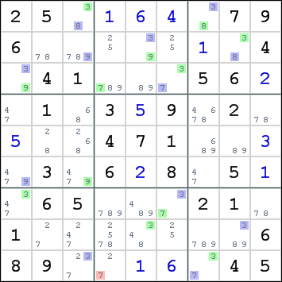
Podemos, portanto, eliminar o dígito 7 desta célula, o que nos permite colocar o dígito restante, 2.